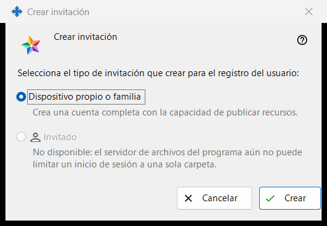
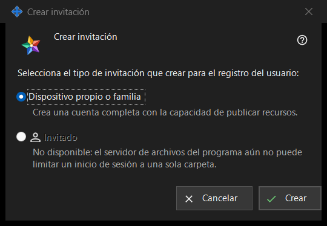

Crear invitación
Para qué sirve
Esta pequeña ventana pregunta qué tipo de cuenta creará la nueva invitación. Se abre con «Crear invitación..» en el grupo «Invitaciones» de los ajustes del servidor de intercambio; el grupo aparece cuando el gestor se conecta con el servidor.


En este orden
- En los ajustes del servidor de intercambio busca el grupo «Invitaciones» y pulsa «Crear invitación..».
- Deja seleccionado «Dispositivo propio o familia».
- Pulsa «Crear».
- Se abre la ventana «Invitación creada» y muestra el código una sola vez: cópialo allí. «Cancelar» o Esc cierra la ventana sin crear nada.
Los elementos
Tipo de invitación
La pregunta «Selecciona el tipo de invitación que crear para el registro del usuario:» ofrece dos botones de opción. «Dispositivo propio o familia» está seleccionado de forma predeterminada, y la línea de debajo dice «Crea una cuenta completa con la capacidad de publicar recursos.» Quien usa la invitación registra su propio usuario y su propia contraseña.
Crear
«Crear» pide al servidor una invitación de un solo uso. Si todo va bien, en la página de ajustes aparece la línea «Invitación creada con éxito.» y se abre la ventana con el código. Si el servidor la rechaza, el motivo aparece en la página y no se abre la ventana del código. La lista muestra cada invitación con su tipo, hora de creación, estado y un hash, nunca con su código.
Retirar una invitación
Para cancelar una invitación ya creada, selecciónala en la lista y pulsa «Revocar». Cuando lo confirmes, su código deja de funcionar.
Cancelar
«Cancelar» o Esc cierra la ventana y no crea nada.
Ajustes del gestor · Ajustes de uso compartido SFTP · Ajustes del servidor de intercambio